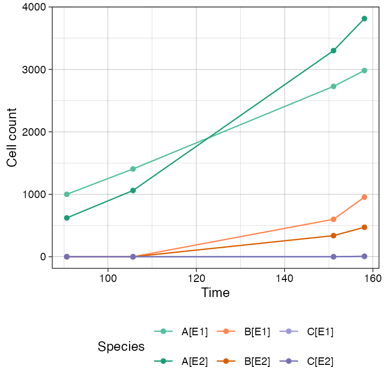
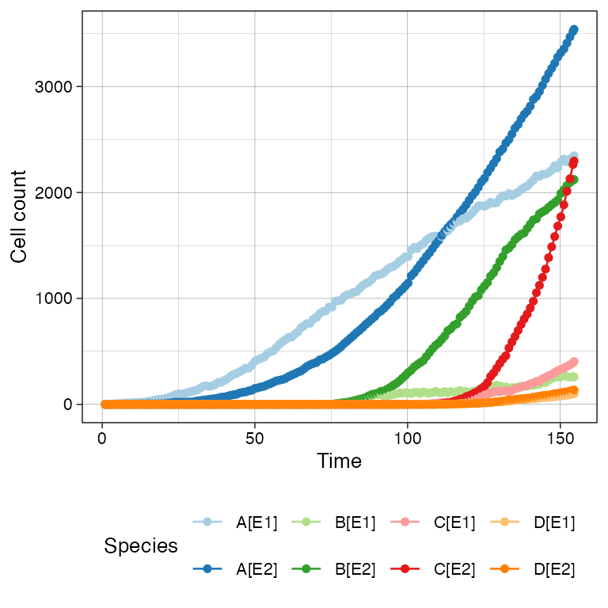
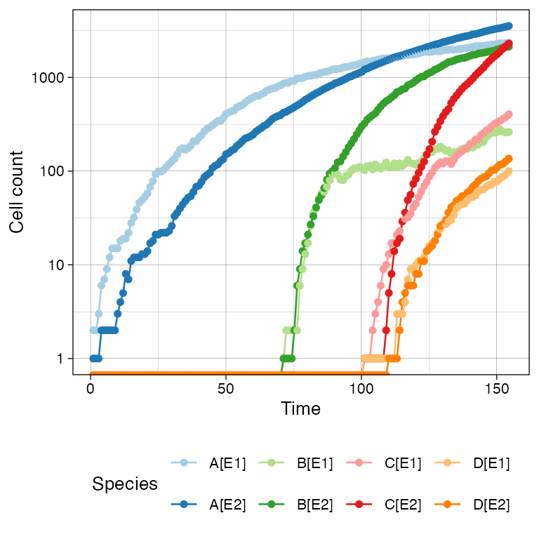
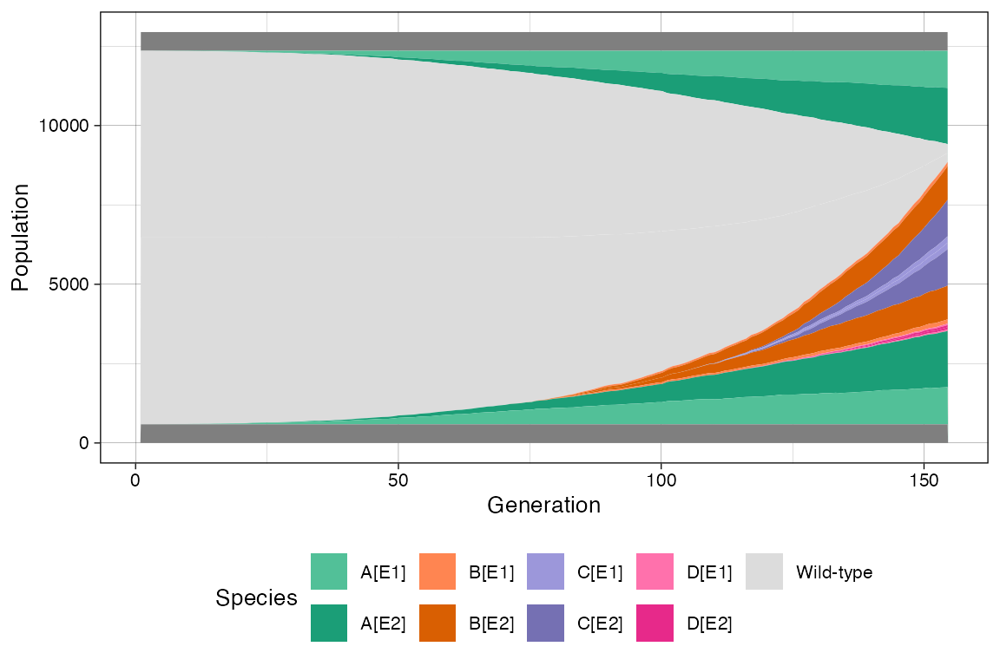
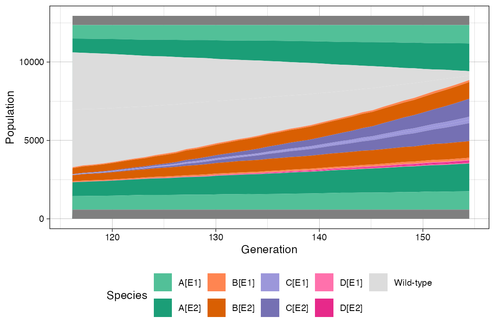
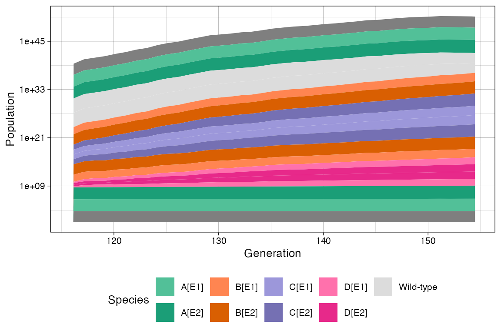
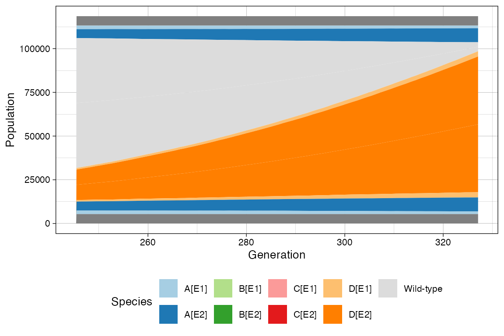
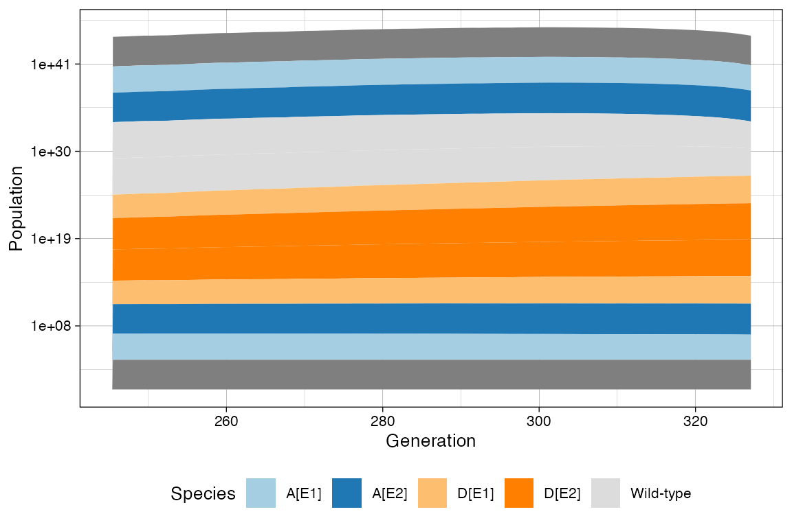

Note: This article presents advanced topics on tissue simulation. Refer to this article for an introduction on the subject.
Disclaimer: ProCESS/CLONES implements probability distributions using the C++11 random number distribution classes. Since the standard does not specify the underlying algorithms, their implementations are left to the compiler. Consequently, the simulation output depends on the compiler used to build CLONES, and the results reported in this article may differ from those obtained by the reader.
Sometimes it is convenient to plot a time series of a simulation, reporting species or firing counts over time. Since ProCESS is programmable, it is easy to make a for-loop algorithm and collect the simulation data over time.
Default History-Based Data
However, this is not required because at the end of any
run_to_* method, CLONES stores data on the number of
species cells and the number of event firings. These data can be
extracted.
Let us consider the simulation sim as produced in this article.
# to use %>% the package dplyr is required
library(dplyr)
#>
#> Attaching package: 'dplyr'
#> The following objects are masked from 'package:stats':
#>
#> filter, lag
#> The following objects are masked from 'package:base':
#>
#> intersect, setdiff, setequal, union
# the firings
sim$get_firing_history() %>% head()
#> event mutant epistate fired time
#> 1 deaths A E1 2857 90.66822
#> 2 duplications A E1 3997 90.66822
#> 3 switches A E1 201 90.66822
#> 4 deaths A E2 117 90.66822
#> 5 duplications A E2 598 90.66822
#> 6 switches A E2 60 90.66822
# for example, total number of the deaths on `B+` at the end of the
# previous calls of the `run_to_*` methods
sim$get_firing_history() %>%
filter(event == "death", mutant == "B", epistate == "E2")
#> [1] event mutant epistate fired time
#> <0 rows> (or 0-length row.names)
# the counts
sim$get_count_history() %>% head()
#> mutant epistate count time
#> 1 A E1 1000 90.66822
#> 2 A E2 622 90.66822
#> 3 B E1 0 90.66822
#> 4 B E2 0 90.66822
#> 5 C E1 0 90.66822
#> 6 C E2 0 90.66822The time-series can be plot using plot_timeseries()
# time-series plot
plot_timeseries(sim)
Custom Time-Series
If the default time-series is not enough coarse-grained, one can set
TissueSimulationhistory_delta](../reference/TissueSimulation-cash-history_delta.md)</code>
to increase the sampling rate of
the state (by default,
<code>[TissueSimulationhistory_delta is set to
0).
We show this by re-simulating a tumour with two sub-mutants.
# example time-series on a new simulation, with coarse-grained time-series
sim <- TissueSimulation("Finer Time Series", epigenetic_states = c("E1", "E2"))
sim$history_delta <- 1
sim$death_activation_level <- 100
# add a mutant "A"
sim$add_mutant("A", list(E1 = list(duplication = 0.2, death = 0.1, E2 = 0.01),
E2 = list(duplication = 0.08, death = 0.01,
E1 = 0.01)))
sim$place_cell("A[E1]", 500, 500)
sim$run_up_to_size("A[E2]", 400)
#> [████████████████████████████████████████] 100% [00m:00s] Saving snapshot
# add a mutant "B"
sim$add_mutant("B", list(E1 = list(duplication = 0.3, death = 0.3, E2 = 0.05),
E2 = list(duplication = 0.3, death = 0.1, E1 = 0.05)))
sim$mutate_progeny(sim$choose_border_cell_in("A"), "B")
sim$run_up_to_size("B[E2]", 300)
#> [████████████████████████████████████████] 100% [00m:00s] Saving snapshot
# add a mutant "C"
sim$add_mutant("C", list(E1 = list(duplication = 0.2, death = 0.1, E2 = 0.1),
E2 = list(duplication = 0.4, death = 0.01, E1 = 0.1)))
sim$mutate_progeny(sim$choose_border_cell_in("B"), "C")
# add a mutant "D" - has the same rates of "C"
sim$add_mutant("D", list(E1 = list(duplication = 0.2, death = 0.1, E2 = 0.1),
E2 = list(duplication = 0.4, death = 0.01, E1 = 0.1)))
sim$mutate_progeny(sim$choose_border_cell_in("A"), "D")
sim$run_up_to_size("D[E1]", 100)
#> [████████████████████████████████████████] 100% [00m:00s] Saving snapshotThe time-series can be plot using plot_timeseries().
# time-series plot
plot_timeseries(sim)
# logscale helps seeing the different effective growth rates
plot_timeseries(sim) + ggplot2::scale_y_log10()
#> Warning in ggplot2::scale_y_log10(): log-10 transformation introduced infinite values.
#> log-10 transformation introduced infinite values.
Muller Plot
We can also get a Muller plot of the evolution using ggmuller.
# default Muller plot
plot_muller(sim)
In this case every population is annotated as a descendant of the ancestor mutant. Note however that reversible epi-states do not fit a traditional Muller plot because they violate the no-back mutation model.
In this case, ProCESS will show first the epi-state that was randomly injected in the simulation, and the second will result by linear. This is not a completely correct perspective of the simulation time-series; still, it help understand trends.
# custom Mullers
clock <- sim$get_clock()
plot_muller(sim) + ggplot2::xlim(clock * 3/4, clock)
plot_muller(sim) +
ggplot2::xlim(clock * 3/4, clock) +
ggplot2::scale_y_log10()
Time-Varying Evolutionary Rates
The rates of any species may change over time. For instance, this happens when a population is subject to a targeted treatment.
For instance, going back to the example simulation, we can increase
the death rates of C[E1], C[E2],
B[E1], and B[E2].
# current rates
sim
#>
#> ======= ==== ==== ====== ==========
#> species λ δ counts %
#> ======= ==== ==== ====== ==========
#> A[E1] 0.20 0.10 2347 20.9385315
#> A[E2] 0.08 0.01 3540 31.5817647
#> B[E1] 0.30 0.30 261 2.3284860
#> B[E2] 0.30 0.10 2123 18.9401374
#> C[E1] 0.20 0.10 405 3.6131680
#> C[E2] 0.40 0.01 2297 20.4924614
#> D[E1] 0.20 0.10 100 0.8921402
#> D[E2] 0.40 0.01 136 1.2133107
#> ======= ==== ==== ====== ==========
#>
#> ======= ==== =====
#> species ε dest
#> ======= ==== =====
#> A[E1] 0.01 A[E2]
#> A[E2] 0.01 A[E1]
#> B[E1] 0.05 B[E2]
#> B[E2] 0.05 B[E1]
#> C[E1] 0.10 C[E2]
#> C[E2] 0.10 C[E1]
#> D[E1] 0.10 D[E2]
#> D[E2] 0.10 D[E1]
#> ======= ==== =====
#>
#> Species A[E1]: 15266 (deaths), 18000 (duplications) and 896 (switches)
#> Species A[E2]: 1531 (deaths), 4685 (duplications) and 510 (switches)
#> Species B[E1]: 2923 (deaths), 2021 (duplications) and 281 (switches)
#> Species B[E2]: 6734 (deaths), 10020 (duplications) and 1443 (switches)
#> Species C[E1]: 599 (deaths), 567 (duplications) and 189 (switches)
#> Species C[E2]: 273 (deaths), 3006 (duplications) and 626 (switches)
#> Species D[E1]: 0 (deaths), 97 (duplications) and 24 (switches)
#> Species D[E2]: 8 (deaths), 146 (duplications) and 26 (switches)
# raise the death rate levels of "B" species
sim$set_rate("B[E1]", "death", 0.5)
sim$set_rate("B[E2]", "death", 0.5)
# ... and those of "C" species
sim$set_rates(list(C = list(E1 = list(death = 0.5),
E2 = list(death = 0.5))))
# now D will grow
sim$run_up_to_size("D[E1]", 6000)
#> [████████████----------------------------] 28% [00m:00s] Cells: 32237 [████████████████████████----------------] 58% [00m:01s] Cells: 63243 [████████████████████████████████████----] 88% [00m:02s] Cells: 91143 [████████████████████████████████████████] 100% [00m:02s] Saving snapshot
# current state
sim
#>
#> ======= ==== ==== ====== =========
#> species λ δ counts %
#> ======= ==== ==== ====== =========
#> A[E1] 0.20 0.10 2967 2.890235
#> A[E2] 0.08 0.01 16078 15.662017
#> B[E1] 0.30 0.50 0 0.000000
#> B[E2] 0.30 0.50 0 0.000000
#> C[E1] 0.20 0.50 0 0.000000
#> C[E2] 0.40 0.50 0 0.000000
#> D[E1] 0.20 0.10 6000 5.844763
#> D[E2] 0.40 0.01 77611 75.602985
#> ======= ==== ==== ====== =========
#>
#> ======= ==== =====
#> species ε dest
#> ======= ==== =====
#> A[E1] 0.01 A[E2]
#> A[E2] 0.01 A[E1]
#> B[E1] 0.05 B[E2]
#> B[E2] 0.05 B[E1]
#> C[E1] 0.10 C[E2]
#> C[E2] 0.10 C[E1]
#> D[E1] 0.10 D[E2]
#> D[E2] 0.10 D[E1]
#> ======= ==== =====
#>
#> Species A[E1]: 76045 (deaths), 78903 (duplications) and 3772 (switches)
#> Species A[E2]: 18594 (deaths), 34782 (duplications) and 3882 (switches)
#> Species B[E1]: 4597 (deaths), 3128 (duplications) and 434 (switches)
#> Species B[E2]: 11720 (deaths), 13189 (duplications) and 1902 (switches)
#> Species C[E1]: 5086 (deaths), 3117 (duplications) and 1054 (switches)
#> Species C[E2]: 12692 (deaths), 14660 (duplications) and 3023 (switches)
#> Species D[E1]: 36122 (deaths), 22038 (duplications) and 7419 (switches)
#> Species D[E2]: 40384 (deaths), 138078 (duplications) and 27502 (switches)
# this now show the change in rates
clock <- sim$get_clock()
plot_muller(sim) + ggplot2::xlim(clock * 3 / 4, clock)
plot_muller(sim) +
ggplot2::xlim(clock * 3/4, clock) +
ggplot2::scale_y_log10()